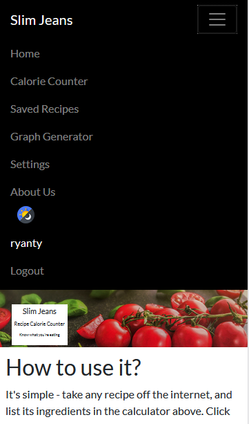
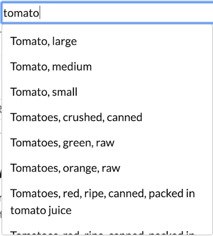

Milestone 3
Proposed Level of Achievement: Apollo 11
1. Overview
This is the final milestone. With that, this README will document
- The features we implemented in our calorie counter webpage
- The challenges we faced in implementing such features
- The steps we took to overcome these challenges
- User testing and additional considerations taken
The site can be found at this link. The image and piechart/graph load times are a bit slow since we use a free hosting service (PythonAnywhere).
You may navigate around the website using the top navigation bar. Certain features only usable by users that have logged in may only be accessed via registration of an account, and then logging in. Unregistered users, however, have access to the calorie counter itself.
2. Revamp of Site UI
The original design was a bit plain, so we decided to make some changes to the site's UI.
-
We removed the sidenav entirely as it only gave us issues viewing the
platform on mobile, moving the sidenav links and elements to the topnav.
This made it easier to view the website on mobile, such as the following:

- All images used are either our own, or images sourced from this website.
- In general, the site looks more appealing to the eye.
3. Calorie Counter
This was already shown in the prototype to work, there are however, a few aspects that we would like to talk about in this section.
3.1 typeahead.js technical details
The typeahead box is actually just a wrapper around each <input> tag.
1 2 3 | <span class="twitter-typeahead" style="position: relative; display: inline-block;"> <!-- Input box --> </span> |
A configure() method is called on each input box that wraps the typeahead
object around each one. Every character typed queries the database using a
regex, this allows for dynamic ingredient searching while the user types their
desired query.
3.2 typeahead.js bug
Unbeknownst to us, the prototype shown in Milestone Two had a rather annoying
bug that presented itself when one added rows to the calorie counter. In order
to do input validation, we forced the user to select options from the
drop-down menu, using Twitter's typeahead.js:

The recording software glitched a bit...
If multiple rows were added at the start, and users tried to select options from the drop-down menu, they would have to click multiple times in order to select that item properly. If the item was far down the drop-down menu, the menu would refresh and be brought back to the first entry. This made a menu with many entries and selecting an item far down the menu an exercise in frustration.

Five rows, so need to click five times
We came to realise that all input fields which make use of typeahead's
functionality were styled with the typeahead CSS class. This was a naming
decision which we had made when we first started working on the autocomplete
feature and subsequently forgot about. Hence, it came back to cause many bugs
and we finally found out about it after rigorous unit testing.
3.3 Input Validation
A big part of simplifying the back-end was to restrict users in selecting
the ingredients. In order to do this, we simply made the unit field
unselectable until the user clicked something from the drop-down menu. This
would trigger the Please fill in all input fields alert, hence forcing the
user to pick something from the drop-down menu.
3.4 Empty Rows
We received feedback in Milestone Two that empty rows in the table would not
allow the user to submit the form using the Analyze Calories button. We
originally forced the user to fill in all input fields within the form in order
to submit it using a simple boolean check. We added in a simple if check to
continue processing the rest of the ingredients if an empty row was found.
1 2 3 | function isAnEmptyRow(desc, amount, unit) { return desc === "" && amount === "" && unit === ""; } |
This seems to work well without issues.
3.5 Piechart for Results
The calorie counter now displays a piechart, giving users at a glance what ingredients contribute the most to the overall caloric amount. This fulfilled one of the features we wanted to add to the website.
For this feature, we used the Google Charts API to render the chart.
1 2 3 4 5 6 7 8 9 10 11 12 13 14 15 16 17 18 19 20 21 22 23 24 25 26 | function drawChart() { let data = google.visualization.arrayToDataTable(breakdown); let options = {}; if (localStorage.getItem('mode') === 'dark') { options = { title: "Breakdown", titleTextStyle: { color: 'white' }, legend: { textStyle: { color: 'white' } }, backgroundColor: '#232b2b', color: 'white' }; } else { options = { title: "Breakdown" }; } var chart = new google.visualization.PieChart(document.getElementById("piechart")); chart.draw(data, options); } |
3.6 Food Database
As stated before, we obtained our data directly from USDA's website.
The original database contained over 8000 entries of foods, which included many restaurant foods such as ones from McDonalds or Burger King. We felt that this would only clog up the search results when users would be trying to find ingredients more suited for cooking at home, and thus we manually removed them from the database.
Some of the feedback given to us was that the ingredient choices are too complicated and that we could perhaps simplify them because users might not like that level of complexity (e.g. it is tedious to look through the ingredient autocomplete list for similar food choices). However, this is a limitation that we chose to accept from the beginning. We knew that we would be using a pre-set source for the food database in order to implement our autocomplete feature. Here are some of the alternatives that we had but ultimately chose to reject:
-
One option would be to find databases with simpler ingredient names. We
felt that this would defeat the purpose of the calorie counter since the
level of required specificity would not be there when selecting ingredients.
For instance, a simpler food database could perhaps simply listed "tomato"
as part of its ingredient selection. With our current database, we give users
a choice between different varieties of tomatoes as well as different methods
of preparation. Again, this kind of specificity would be lost if we had gone
with a database which is perceived to have simpler ingredient names.
The autocomplete choices that appear in the dropdown list for "tomato"
- Another alternative would have been to create our own database but we felt that this would not be comprehensive or specific enough. Hence, we decided to choose one from a credible source.
- We could have gone with a database which is more complicated than our current one but this could potentially affect the user experience negatively so we decided against it.
Ultimately, the USDA's database was actually the best one that we could find based on the circumstances. Refer to Section 8.1 for more details on how we decided to tackle this problem.
4. User Accounts and Sign-ins
User Accounts and Sign-ins were a big part of how we implemented certain functions within the webapp. Flask has a framework for User Accounts already available.
While we initially intended to work with Firebase to do Google/Facebook Sign-ins due to the ease of implementation and security in having established third-parties handle authentications for us, we decided against this because we wanted to appreciate the difficulty and security considerations with storing usernames, passwords and doing secure serverside authentication, and how big of a topic it is in web security.
4.1 NIST Password Guidelines
We decided to follow NIST's Password Guidelines (see section 5.1.1) for password authentication, since it seems to be the standard for password registration for end-users. We followed the following guidelines:
Passwords should...
- be at least 8 characters in length
- be allowed to be at least 64 characters in length
- be able to use all printing ASCII characters as well as spaces
According to the guidelines, password hints and secret questions are strongly discouraged, as are composition rules (1 uppercase, 1 lowercase, 1 special character, etc).
4.2 Information Transfer
Passing username and passwords back and forth between the front and back-end was done using HTTPs POST requests. This was required to prevent against MiTM (man-in-the-middle) attacks.
4.3 Registration
We used Flask's Werkzeug library to handle password hashing and salting. Hashing ensures that we do not store passwords in plaintext, while salting ensures that similar passwords don't result in the same hash, and to prevent the use of Rainbow Tables. For example, I made two accounts with the following usernames and passwords:
1 2 3 4 | user password ==================== hashed1 123456 hashed2 123456 |
The two passwords were hashed and salted to:
1 2 3 4 5 6 7 | hashed1 password: pbkdf2:sha256:150000$QBDEP5Jn$3001b4fb44eeb17630b6d9a0089f9b883686bd6ea9a61cec1f8b1ae0ade8e05e hashed2 password: pbkdf2:sha256:150000$0o18iF5N$7c406da90ce724f65c896fe931f9bda806fb3f04b55e21d1f9f0f88488b47385 The two hashes are obviously different |
... making it more secure. In the back-end, our code is simply:
1 2 3 4 5 6 7 8 9 10 11 12 13 14 15 16 17 18 19 20 21 22 | @app.route("/register", methods=["GET", "POST"]) def register(): if request.method == "POST": form = request.form username = form["username"] hashed_password = generate_password_hash(form["password"]) connection = sqlite3.connect(path.join(<connect to db>)) cursor = connection.cursor() try: cursor.execute("""INSERT INTO users (username, password) VALUES(?, ?)""", (username, hashed_password)) connection.commit() except sqlite3.IntegrityError: connection.close() flash("Username already in use") return render_template("register.html") connection.close() return redirect("/") else: return render_template("register.html") |
4.4 Logins
Logins were simple. We simply sent the username and password back to the
back-end, and uses Werkzeug's check_password_hash() function to check if the
given password matched the hashed password in our database. If it matches,
it logs the user in and redirects the user to the front-page.
1 2 3 4 5 6 7 8 9 10 11 12 13 14 15 16 | form = request.form username = form["username"] password = form["password"] connection = sqlite3.connect(path.join(ROOT, "slim_jeans.db")) cursor = connection.cursor() cursor.execute("""SELECT * FROM users WHERE username = (?)""", (username,)) userInformation = cursor.fetchall() if len(userInformation) < 1 or \ not check_password_hash(userInformation[0][2], password): flash("Invalid username and/or password") return render_template("login.html") else: session["user_id"] = userInformation[0][0] session["username"] = userInformation[0][1] return redirect("/") |
4.5 Session ID
The user's user id (as stored in the SQL database upon registration) and username is stored after logging in. The Python code that handles this is as follows:
1 2 | session["user_id"] = userInformation[0][0] session["username"] = userInformation[0][1] |
Flask has a session object which deals with user information during web
browsing, while userInformation is a 2D array that contains the user's
information after querying the database. In this way, we can use Flask to pass
user information to the front-end, which can then be accessed with the Jinja2
templating language. This allows us to keep track of things such as whether a
user is logged in and render the website accordingly. For instance, the top
navbar will have different options for users who are logged in.
5. Saving Recipes to Database
This feature was surprisingly annoying and frustrating to implement, mostly
due to the handling of events by the Display and Delete buttons. Many of
the problems faced were due to async on the front-end, rather than the
back-end.
5.1 Front-end
We had a few versions of this page using vanilla Javascript. But this proved to be very time-consuming and frustrating to work with. In the end, we ended up going with the DataTables library, which allowed us to more easily create a table with additional functionality, that also allowed styling via Bootstrap.
The table displays the recipe name and number of calories of each recipe stored into the user account using the calorie counter. We give the users two additional functionality in the form of two buttons in each row:
| Button | Function |
|---|---|
| Shows more information about the recipe. This uses DataTable's child rows API, where more information can be dynamically inserted into the table | |
| Deletes the recipe from the table (and database). While DataTable's does offer an API to delete rows from the table, we needed to handle reinserting the same row into the table for the "Undo" feature ourselves. |
"Delete"
The "delete" functionality posed some challenges for us. Firstly, ajax
requests are asynchronous, and so making an ajax call every time the user
deletes something caused some problems with the code (functions not returning
until ajax request has finished, causing null in some variables, etc). So,
we ended up storing the names of the recipes that were to be deleted in an
array (a "fake" delete, as it were), and executing an ajax request to delete
all the recipes from the database once the page is unloaded.
1 2 3 4 5 6 7 8 9 10 11 12 | $(window).on('unload', function() { for (let key in toDelete) { $.ajax("/delete_recipe_data", { type: 'POST', contentType: "application/json", dataType: "json", data: JSON.stringify({ "recipeName": toDelete[key] }) }); } }); |
It also turned out that doing this method made the undo button easier to
implement as well.
5.2 undo
This was suggested to us by a user during our testing, more information can be found in Section 8.4
5.3 Back-end
Flask has a jsonify() method to pass JSON objects back to the
front-end Javascript. Conversely, Javascript's jQuery has the ability to make
an ajax request to the Python back-end to send data back. This is how the
front-end communicates with the SQL database in the back-end. So, to send
data back to the back-end, an ajax request may look something like this:
1 2 3 4 5 6 7 8 9 | const data = ...; // recipe data goes here $.ajax("/func_name", { type: "POST", contentType: "application/json", dataType: "json", data: JSON.stringify(data) }).done(() => { // do something after function returns }) |
When the Python function returns from the back-end, .done() is used to
continue the running of the Javascript after the ajax request is finished.
In the back-end, the Python function looks like:
1 2 3 4 5 6 7 | @app.route("/func_name", methods=["GET", "POST"]) @login_required def func_name: if request.method == "POST": # make SQL requests and deletes from database else: return render_template("my_page.html") |
Due to the way we delete recipes form the database, we do not allow
duplicate recipe names inside the database. This is done using an SQL
SELECT first:
1 2 3 4 | exists = cursor.execute("""SELECT 1 FROM recipes WHERE username = (?) AND recipe_name = (?)""", (username, recipe_name)).fetchall() |
Then check if (exists)
1 2 3 4 5 6 7 8 9 10 | if (exists): return json.dumps("Recipe already exists") else: cursor.execute("""INSERT INTO recipes (username, recipe_name, recipe, calories) VALUES(?, ?, ?, ?)""", (username, recipe_name, recipe, calories)) connection.commit() connection.close() return json.dumps("Recipe saved") |
5.4 Method of Storage
We store each recipe along with its recipe name, number of calories and the date and time at which it was saved at inside our database. The individual ingredient information iss stored in a large JSON string such as the following:
1 | {"ingredient1":{"description":"Avocados, raw, California","amount":"200","unit":"grams","calories":333.9130434782609},"ingredient2":{"description":"Milk, canned, condensed, sweetened","amount":"0.75","unit":"cups","calories":738},"ingredient3":{"description":"Milk, whole, 3.25% milkfat, with added vitamin D","amount":"0.75","unit":"cups","calories":111.75},"ingredient4":{"description":"Lime juice, raw","amount":"1","unit":"tablespoons","calories":3.75}} |
This is generated from the front-end when the user saves the recipe. The
information is saved to an object and the JSON.stringify() method is
used to convert it to a string.
Fortunately, we are able to use Flask's jsonify() method to convert
this long string into a Javascript Object that can be processed by the front-end
to display the user's saved recipes.
6. Night Mode
Inspired by NUSMods, this was suggested as a joke during one of our meetings. We eventually decided to implement it in our webpages. There's a sun/moon icon in the navbar which toggles night mode for the website.
It was primarily done using jQuery, we selected the <body> tag to add a
CSS class class='dark'. From there, we used CSS to edit the font and
background color of each elemnt in order to style the page in this way.
1 2 3 4 5 6 | body.dark { background-color: rgb(35, 43, 43); color: white; } /* other nitty-gritty css omitted */ |
For tables, we could use Bootstrap's table-dark implementation and just
add class='table-dark' to each table to style it as such
1 | $('table-id').addClass('table-dark'); |
We had some issues implementing this with DataTable's library however, and had to override some of their own CSS styling in order to successfully implement proper night mode functionality in all our webpages.
7. Graph Generator
Example graph
7.1 Rationale
We decided to implement a graph generator in order to show users a visual representation of the calories of the recipes that they've stored in the past. We gave users the option to display 5, 10, 15, 20 or all stored recipes. This is useful to have a side by side comparison across different recipes and time periods.
7.2 Implementation
We used the Google Charts API to render our graph. The data is passed to the API from our stored recipes database. Google's Charts API comes with in-built interactivity which is useful for displaying additional data whenever a user hovers over one of the columns in the column chart.
8. User Testing
We gave it to a few friends and family members who actually cook and see if they liked the features. Here is some feedback that we have gathered.
8.1 Difficulty of Inputting Standard Ingredients
One of the criticisms we got from users was that it was difficult to input ingredients such Potatoes, Carrots or Onions as no recipe gives the weight of such ingredients, but rather their number. For example, most recipes list such ingredients as:
1 2 3 4 5 6 7 8 | 1 medium carrot 1 small onion ... rather than: 61g of carrots 30g of onions |
We decided to manually add common ingredients such as potatoes, carrots, onions,
tomatoes, etc into the database with unit units, making it easier for
users to input such ingredients.
We also decided to add some notes regarding some common ingredients since they are represented differently in the food database than what we are normally used to. One example is clarifying that salt falls under "Salt, table" to make it easier for users to find.
8.2 Error Handling
One of our tech savvy friends tried to break the website by visiting website paths that did not exist as well as those that only exist as Python Flask functions. This resulted in a lot of server errors and would not make for a good user experience if users were to encounter them. We added in some generalised error handling code to handle all HTTP exceptions.
8.3 Meaningful User Interactions with the UI
Another piece of feedback which was given to us was that some users did not receive feedback upon completing certain actions. For instance, upon successful registration, users were brought back to the home page but were not told that their registration was successful. We implemented some feedback mechanisms (mainly JavaScript alerts and Flask's message flashing) in order to give users more meaningful information once they had finished certain actions.
8.4 undo Functionality
One of our users, while exploring the saved recipes page on an example account, accidentally clicked off a Delete on one of the recipes. After a "sorry", we realised that this could happen to any other user.
The first thing we did was put in an alert to confirm whether the user
wanted to delete the recipe. After that, we implemented an undo functionality.
We implemented this using Bootstrap alerts:
The undo button's event was handled by jQuery, the function acquires
the data from a large JSON object, appends it to the table and redraws
the table. The "fake delete" array is updated as well.
1 2 3 4 5 6 7 8 9 10 11 12 13 14 15 16 17 18 19 | /** * Function to handle undo event for a specific recipe. * @param {string} recipeName - name of recipe associated with this button * @param {object} recipes - list of all recipes and their data */ function handleUndoOnClick(recipeName, recipes) { $(document).on('click', '#undo-' + replaceSpacesWithUnderscores(recipeName), function() { findRecipe(recipeName, recipes).then((row) => { $('#sr-recipe-table').DataTable() .row .add(row) .draw(); toDelete = toDelete.filter(names => names !== recipeName); insertAlert(createUndoneAlert()); deleteAlert(recipeName); }); }) } |
9. Project Conclusion
We would say that we have learnt greatly from Orbital, particularly the many APIs and frameworks (and lack thereof) we have had the pleasure of using, such as Flask, Jinja2, SQLite, etc and the other technologies such as HTML5, CSS and native Javascript.
Doing this project using native Javascript has also allowed us to appreciate new web frameworks such as React, Vue or Angular that abstracts the nitty-gritty of direct DOM manipulation and state changes. Even trying to create and insert a table into a webpage is long-winded and cumbersome to do!
We feel that we could have done more to improve the website, such as optimising it for mobile as well as implemented other features which we had in mind, but we simply did not have the time to work these imporvements.
Regardless, no matter what level of achievement we end up obtaining for Orbital, this has been a fruitful and memorable project which has taught us a lot about web development and software engineering concepts.
10. Deliverables
10.1 Poster
10.2 Project Log
Our project log is documented in this Google Sheet